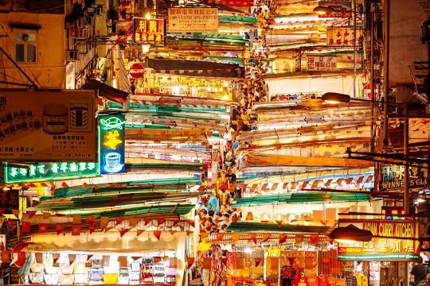

| The Temple Street Night Market is sometimes known as Men's Street as it is popular for men's fashion.
The market starts at 2 p.m., but is lively at dusk daily. Traffic is closed on the street at that time as visitors
swarm into the street. There are more than a hundred stalls with colourful lights in the market. There are carts bulging
with goods from clothing to mobile phones and watches. Stalls have items mainly for men, jeans, t-shirts, pants, lighters,
shoes and men's accessories. Low-priced merchandise is common in the night market. Cheap second hand goods such as cassettes,
video tapes, old newspapers, antiques are also sold there. Like in other night markets in Southeast Asia, prices can always
be negotiated by bargaining.
(Souce:https://en.wikipedia.org/wiki/Temple_Street,_Hong_Kong) |
 |